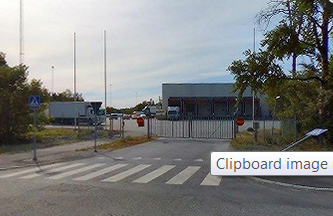

Recent past
 Worked in an e-commerce warehouse. Eventually, I was entrusted with administrative tasks. Having recently learned a programming language (Java), it was natural to look up how to automate some of my work. During this time, I became skilled in Excel, VBA, and Autohotkey. Also, by this time, I was convinced that coding was something I enjoyed, since I was willing to do it on my free time after work.